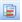
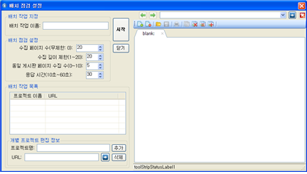

배치 작업 생성
- [배치 작업 창 열기]
- [배치 작업 설정] 창에서 필요한 항목을 작성합니다.
- 배치 작업 이름: 이 항목은 배치 작업명을 결정하는 항목입니다. 배치 작업 이름은 배치 작업을 다시 수행하거나 점검 결과를 선택할 때 식별자로 사용되는 이름입니다. 따라서 해당 배치작업을 연상할 수 있는 이름을 선정하는 것이 좋습니다.
- 배치 점검 설정: 이 항목은 배치 작업에 포함된 프로젝트의 자동 점검 방법을 설정하는 항목입니다. 이 항목의 모든 값은 기 설정된 값을 보여줍니다. 또한 이 화면에서 각 항목을 수정하면 배치 작업에 포함된(되는) 모든 프로젝트에 동일하게 적용됩니다. 배치 점검 설정 항목은 다음과 같습니다.
- 수집페이지 수 : 자동점검할 프로젝트별 웹 페이지의 수를 결정합니다. 그림에서는 20 페이지를 수집하도록 설정되었음을 보여줍니다. 이 값을 0으로 설정하면 999999 페이지를 수집하도록 설정되므로 결국 무제한 페이지 수집을 의미합니다.
- 수집 깊이 제한 : 수집할 웹페이지 URL 경로의 깊이 제한 값입니다. 그림에서는 20 으로 설정되었으므로 웹 페이지를 루트디렉토리로부터 하위20개의 서브 디렉토리에 이르는 웹 페이지를 수집할 수 있음을 의미합니다. 그동안 K-WAH3.0에서는 깊이 우선 방식을 적용했으나, K-WAH4.0 이후 버전에서는 넓이 수집 방법을 사용합니다. 그 이유는 루트 디렉토리로부터 가까운 웹 페이지를 먼저 수집하도록 했기 때문입니다. 조정 가능한 값은 1~20까지 입니다.
- 동일 게시판 페이지 수집 수 : URL은 경로와 검색문장으로 구성됩니다. K-WAH4.4에서는 검색문장이 존재할 경우에 게시판용 웹 페이지로 간주하여 동일 게시판에 포함되는 웹페이지인 경우에 수집하는 웹페이지 수를 제한합니다. 바로 그것이 동일 게시판 페이지 수집 수입니다. K-WAH4.4에서는 이 값을 0~10사이의 값으로 결정할 수 있습니다.
- 응답시간 : 이 값은 네트워크의 속도 또는 서버의 부하 등으로 인하여 웹페이지를 수집할 때 대기하는 시간을 지정하기 위한 것입니다. 이 값은 10초에서 60초 사이의 값으로 결정할 수 있습니다. 네트워크의 속도가 느리거나 점검하려는 웹서버의 속도가 느릴 경우에는 이 값을 크게 합니다. 일반적으로 30초로 설정하면 대부분의 웹서버를 점검할 수 있으나 느릴 경우에는 더 큰 값을, 빠른 경우에는 더 작은 값을 설정하면 점검 시간을 단축할 수 있습니다.
- 배치 작업 목록: 이 목록은 배치작업에 포함되는 프로젝트 목록을 보여주는 상자입니다. 프로젝트를 추가하려면 다음 항목의 "개별 프로젝트 편집 정보"에 프로젝트 정보를 입력하고 [추가] 버튼을 클릭하면 됩니다.
- 프로젝트 삭제: 프로벡트를 삭제하려면 배치 작업 목록에서 프로젝트를 선택한 후 [삭제]을 클릭합니다.
- 프로젝트 추가: 프로젝트를 추가하려면 [개별 프로젝트 편집 정보]의 프로젝트명 항목에 프로젝트 이름을 입력하고 URL 항목에 웹 페이지 주소를 입력합니다. 이어서 [추가] 버튼을 클릭하면 자동적으로 배치 작업 목록에 방금 생성된 프로젝트가 추가됩니다.
- URL 입력방법: 프로젝트의 URL을 입력하거나 유효성을 확인하기 위해서 [배치 점검 설정 창]의 오른쪽에 마련된 웹브라우저를 이용할 수 있습니다.
- 방법 1: URL 입력상자에 URL을 입력합니다. 그리고 오른쪽의 화상표 이미지 버튼(검색)을 클릭하면 URL입력상자에 입력한 웹 페이지가 웹브라우저에 로딩됩니다. 따라서 이 기능을 이용하면 입력한 URL이 정확한가를 확인할 수 있습니다.
- 방법 2 : 두번 째 방법은 오른쪽 웹브라우져 주소 창에 URL을 입력하고 검색 버튼을 클릭하면 웹브라우저에 해당 URL에 해당하는 웹페이지가 표시됩니다. 웹페이지 로딩이 완료되였을 때에 이 웹페이지가 정확하다면 웹브라우저 상단의 URL 추가() 버튼을 클릭하면 URL이 자동적으로 개별 프로젝트 편집 정보의 URL 입력 상자로 복사됩니다. 따라서 점검할 프로젝트 URL을 편리하게 확인하고 입력할 수 있습니다.
※ 만일 새로 추가하려는 프로젝트명이 배치 작업 목록에 있는 프로젝트명과 동일한 경우에는 프로젝트가 추가되지 않으므로 주의해야 합니다. 프로젝트명은 기억하기 프로젝트를 연상할 수 있는 이름으로 작명하는 것이 좋습니다. 많은 경우에 URL의 제목 또는 기관명을 프로젝트명으로 사용합니다.
- 배치작업 시작/닫기: 배치 작업 설정을 완료하면 [시작] 버튼 또는 [닫기] 버튼을 클릭하여 배치 작업 점검을 시작하거나 배치작업을 종료할 수 있습니다.
- 배치 점검 시작: 배치 점검을 시작하려면 [시작]버튼을 클릭합니다. 배치 점검 시작에 앞서 배치 설정 값이 먼저 저장된 이후에 점검이 시작됩니다.
※ 배치파일을 저장하는 과정에서 이미 동일한 배치 파일이 존재할 경우에는 기존의 배치파일이름 뒤에 '(#)' 형식으로 번호를 추가하여 보존합니다. 가장 나중에 저장된 배치 파일은 [배치 작업 지정]에 입력한 배치 작업 이름으로 저장됩니다.
※ 배치파일은 [프로젝트 환경 설정] 창에서 설정한 프로젝트 디렉토리에 저장됩니다. 또한 배치 파일명의 첫글자는 '_(underscore)'로 시작하여 프로젝트 파일과 구분합니다. 따라서 배치파일 이름을 변경하거나 훼손하면 해당 배치 작업 열기, 배치 작업 결과 보기 등의 경우에 오류가 발생할 수 있으므로 주의해야 합니다.
- 배치 점검 취소: 배치 점검 설정을 종료하거나 취소하려면 [닫기]버튼을 클릭합니다. 이때 K-WAH4.4은 작성중인 설정의 저장여부를 사용자에게 확인합니다. 이때 저장하지 않으면 그동안 입력한 값이 모두 지워지므로 중의해야 합니다.
메인 화면에서 메뉴의 [파일]-[새로만들기]-[배치작업]를 선택하거나, 메인 화면에서 왼쪽의 '최근점검한 프로젝트'에서 [배치작업 새로 만들기]를 선택하면 다음 그림과 같은 ' 배치 작업 설정 참'이 열립니다.

각 항목은 다음과 같습니다.
※ 배치 작업 이름은 파일명을 작성하는 것과 동일한 방법으로 작명이 가능합니다. 그러나 첫글자로 '_(underscore)'를 사용할 수는 없습니다. 그 이유는 프로그램 자체적으로 첫글자 '_'는 배치작업 디렉토리를 지정할 때 사용하기 때문입니다.